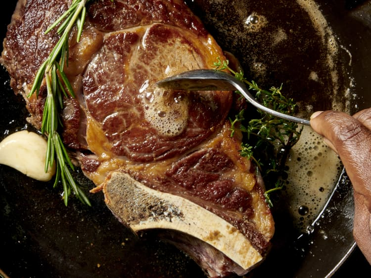

Seared Ribeye

Description
Cast Iron Pan Seared 20 oz+ ribeye, with bacon fat, butter, garlic, thyme and rosemary.
If you're making steaks inside, you've come to the right place. This technique for cooking steak in a cast iron skillet is unbeatable. What sets it apart? It starts on the stove in a cast iron skillet, but you'll finish the steak in the oven. The stovetop-to-oven method produces steaks with a deeply caramelized crust and a tender, perfectly cooked interior.
Ingredients
- 2 20 oz+ ribeye
- Kosher salt
- Black pepper
- Bacon fat or Beef tallow
- Butter
- Black pepper
- Garlic cloves
- Rosemary
- Thyme
Steps
- Let them warm: Remove ribeyes from the fridge 1 hour prior to cooking.
- Preheat oven: Preheat the oven to 400 degrees.
- Get your cast iron hot: 1 hour later, heat a large cast iron pan on high. Get it real hot.
- Season steaks: While the pan is heating, pat dry and season the ribeyes liberally with kosher salt, and black pepper.
- Drop, sear steaks: Once pan is hot, drop 2 tbsp of bacon fat in the pan. When it smokes, pat dry the ribeyes again, place in pan evenly.
- Flip, place in oven: After 5 minutes, flip the steak and place it in the oven for 10-15 minutes, depending on how well you like it. It should be nice and crispy on the seared side.
- Remove from oven, Finish: Remove from oven, add 2 tbsp butter, 2 tbsp of bacon fat, 3 garlic cloves, 2 sprigs of thyme, and 2 sprigs of rosemary. Finish the meat by tilting the pan and repeatedly basting the hot fat, herbs, and garlic over the meat with the large spoon.
- Let rest, enjoy: Lest rest for 5-10 minutes before serving and slicing and enjoying.